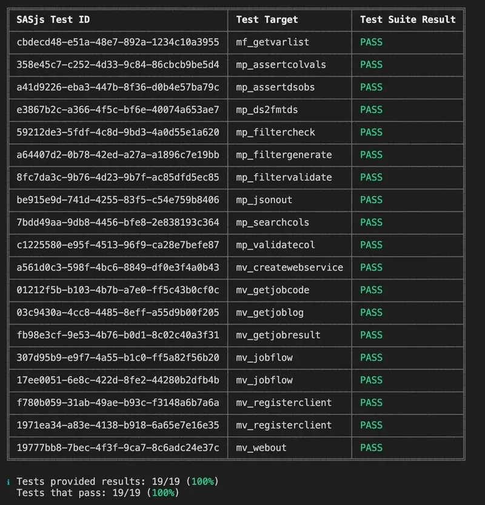
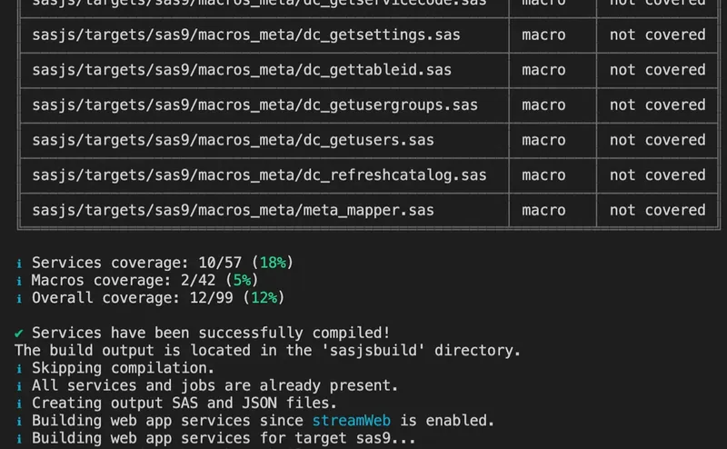
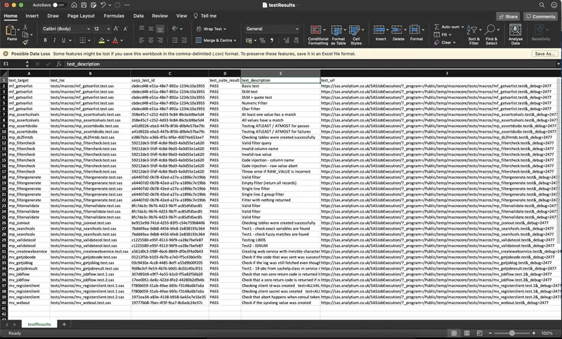
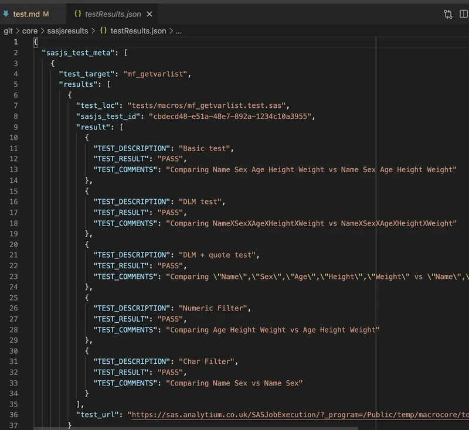
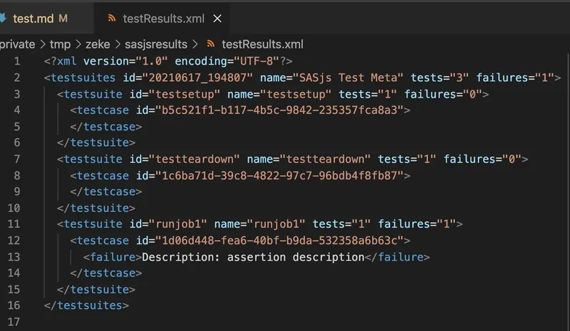
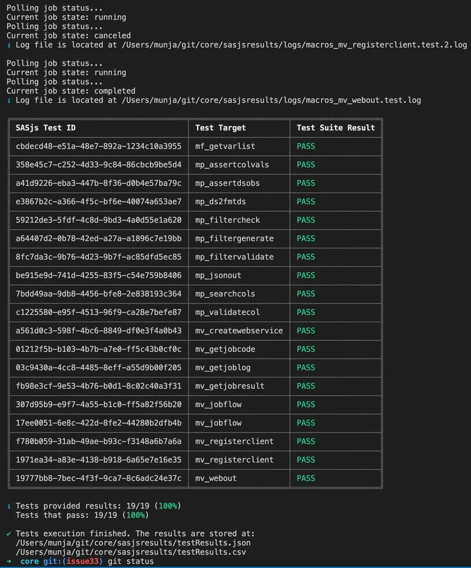

sasjs test¶
The sasjs test command triggers deployed SAS unit tests for execution, and collects the test results in JSON, JUnit XML, LCOV and CSV formats.
Results are also displayed in the console, as follows:

Tests are compiled & deployed as services (STPs in SAS 9, Jobs in Viya, Stored Programs in SASjs/server). In this way, every test is completely isolated with it's own SAS session.
To create a test, simply create a file with the same name as the Job / Service / Macro being tested, but with a .test.sas extension. If you have multiple tests, you can add a .test.[integer].sas extension, and the tests will proceed according to the integers provided.
You can send back one or more test results in a single program by creating a table called work.test_results with the following entries:
| TEST_DESCRIPTION:$256 | TEST_RESULT:$4 | TEST_COMMENTS:$256 |
|---|---|---|
| Some description | PASS | Some run related comment |
| Another test description | FAIL | some explanation of the failure |
The results should be sent back using the following macros (which could be in your termProgram entry):
/* do some tests */
data some sas tests;
set whatever you like;
run;
/* create a test_results table */
data work.test_results;
/* mandatory values */
test_description="some description";
test_result="PASS"; /* or FAIL */
/* optional value */
test_comments="We did this & that happened";
output;
run;
/* send it back with the precompiled webout macro */
%webout(OPEN)
%webout(OBJ, TEST_RESULTS)
%webout(CLOSE)
Examples of tests for SAS Macros are available in the SASjs/CORE library. There are also a series of assertion macros available.
Test Locations¶
Tests will only be compiled if they exist in a folder listed in one of the following sasjsconfig arrays:
Syntax¶
| Option | Alias | Description |
|---|---|---|
--source |
-s |
The test flow to execute. Defaults to sasjsbuild/testFlow.json, which sasjs build writes. |
--outDirectory |
--out |
Folder for the results. Defaults to sasjsresults. |
--force |
-f |
Run every test even when some fail, and exit 0 - for a pipeline that reports rather than gates. |
--target |
-t |
The target to run the tests against. Defaults to defaultTarget in sasjsconfig.json. |
Each filteringString is a regular expression, matched against the test paths in the flow; only the tests that match are run. With none, every test in the flow runs. The set-up and tear-down programs always run.
Examples¶
Execute all tests for the default target:
Execute all tests in the macros folder:
Execute all tests starting with "mv_" and save the output in 'myresults' folder
Prevent the command failing (for example in a CI pipeline that reports rather than gates):
Configuration¶
Test configuration can be provided at root or target level. Configuration example:
"testConfig": {
"initProgram": "sasjs/tests/testinit.sas",
"termProgram": "sasjs/tests/testterm.sas",
"macroVars": {
"testVar": "testValue"
},
"testSetUp": "sasjs/tests/testsetup.sas",
"testTearDown": "sasjs/tests/testteardown.sas"
}
testSetUpwill be executed prior to all teststestTearDownwill be executed after all tests have finishedinitProgramis inserted at the start of every testtermProgramis inserted at the end of every testmacroVarsare defined at the start of every test
File Name Convention¶
Only files names that match following pattern will be considered as tests. Pattern:
Examples:
- Providing a test integer is optional, if provided, the tests will be executed accordingly to numerical order - eg
some_job.test.0.sasfirst andsome_job.test.1.sassecond.
Coverage¶
A SAS Service, Job or Macro is considered covered if there is a test file with the same filename, for example:
In the example above, some_service will be considered covered, some_job will be considered not covered and some_macro.test will be considered as a standalone test.
Overall coverage is displayed, along with a group summary for Jobs, Services and Macros. The table lists every service, job and macro the compile found, marked as covered or not covered, followed by any standalone tests - the same rows and the same keys that sasjs compile writes to sasjsbuild/coverage.json.

Note
We are planning a more 'intelligent' coverage system that can detect whether a macro / service / job was executed as part of the test suite. If this would help your project, get in touch.
Test Body¶
An example of a test that provides a result:
data work.test_results;
test_description="some description";
test_result="PASS";
test_comments="We did this & that happened";
output;
run;
%webout(OPEN)
%webout(OBJ, test_results)
%webout(CLOSE)
Providing the test_results table with a test_result variable is required, in order for the frontend to determine if the test is a PASS or FAIL. The webout() macro definition will be deployed as precode in the compiled test, and is essentially a wrapper for mm_webout.sas or mv_webout.sas according the serverType of the target.
Test Flow¶
SAS unit tests will be executed one after another. Execution order is described in sasjsbuild/testFlow.json which is created as part of compilation process (sasjs compile).
Test Results¶
By default test results will be saved in the sasjsresults folder. An example of sasjsresults folder structure:
├── logs
│ ├── macros_some_macro.test.1.log
│ ├── macros_some_macro.test.log
│ ├── services_some_service.test.log
│ ├── jobs_some_job.test.log
│ ├── testteardown.log
│ └── testsetup.log
├── testResults.csv
└── testResults.json
└── testResults.xml
Results are saved in CSV, JSON and JUnit XML formats.
Assertion Macros¶
A number of ready made assertion macros are available in the SASjs Core library:
- mp_assert - generic assertion
- mp_assertcols - Asserts the existence (or not) of certain columns
- mp_assertcolvals - Asserts the existence (or not) of particular column values
- mp_assertdsobs - Asserts the existence (or not) of dataset observations
- mp_assertscope - Compares before/after to detect scope leakage in a SAS Macro
Running SAS Tests with SASjs¶
In order to run tests, take the following steps:
- Provide tests configuration (testConfig) in the
sasjs/sasjsconfig.jsonfile - Create test files in services, jobs or macro folders (with .test.sas extension).
- Execute
sasjs cbd -t <targetName>to compile and deploy the tests as isolated SAS web services - Execute
sasjs test -t <targetName> - Visit the local
sasjsresultsfolder to review results.
To assist with debugging, all logs are captured, and we generate a URL so that you can easily click and re-run any particular individual test.
CSV Format:

JSON Format:

JUnit XML Format:

Console Output:

Demo Video¶
A demonstration of sasjs test by the developer, Yury Shkoda was provided at a Sasensei SID event in July 2021 - available below.